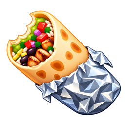

404 — nothing wrapped here.
This page fell off the tortilla. The router couldn't route you anywhere useful.
Try barrito which back on 127.0.0.1:4141.

This page fell off the tortilla. The router couldn't route you anywhere useful.
Try barrito which back on 127.0.0.1:4141.
barrito · MIT · one router, every identity